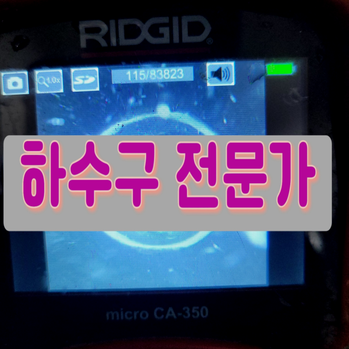
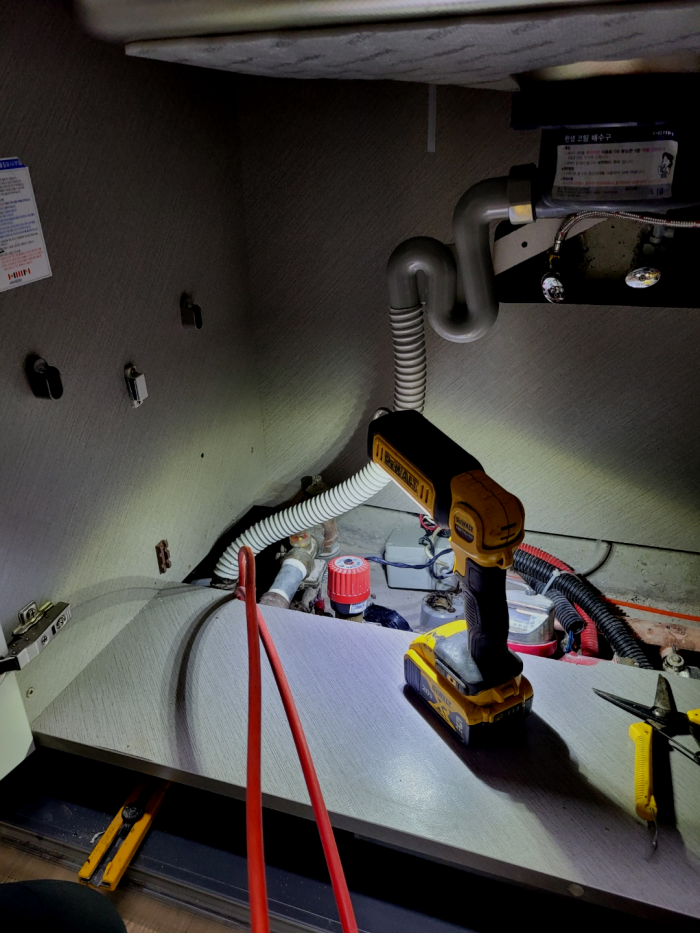
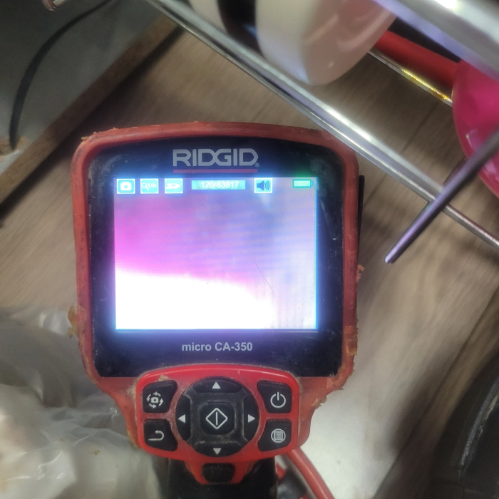
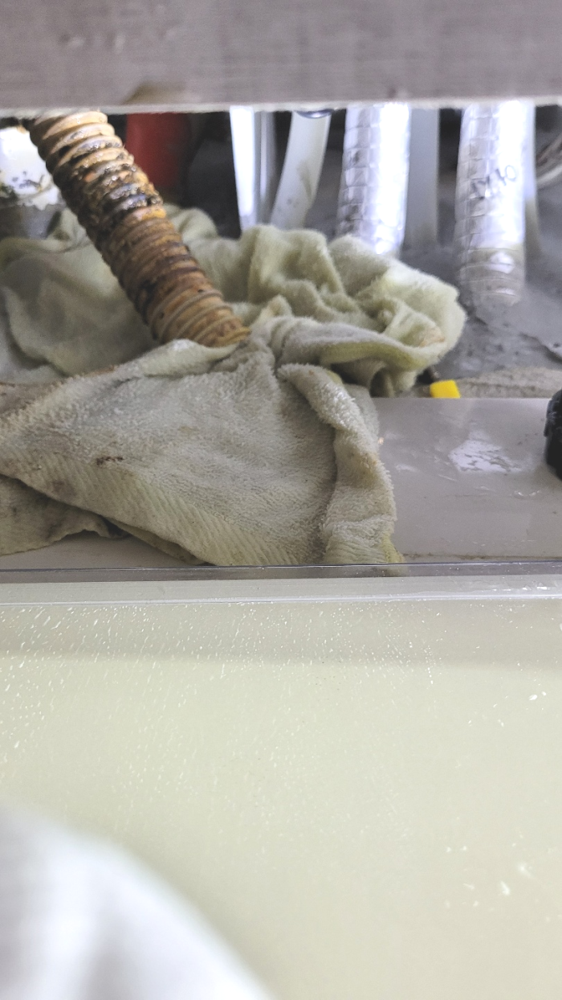
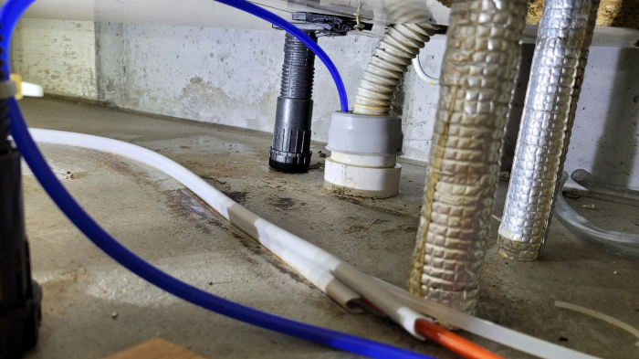
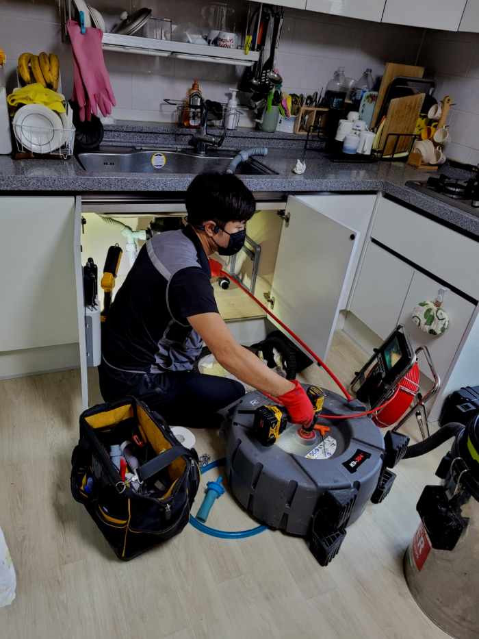
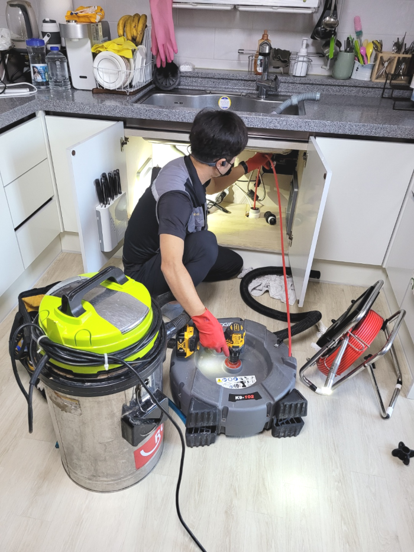

🏠 강동구 상일동 싱크대배수관막힘 명일동 주방하수구 물넘침 뚫는업체
서울 강동구 싱크대막힘 전문 시공 후기

📋 작업 개요
- 위치: 서울 강동구, 강동구, 서울
- 서비스 유형: 싱크대막힘, 변기막힘, 하수구막힘, 배관막힘, 역류해결, 뚫는업체, 배관청소
- 작업 일시: 2024. 1. 27. 22:00
- 업체명: 하수구수사대 (010-5615-2118)
🔍 문제 상황
어서오세요
설비전문업체 "하수구수사대"를 찾아주셔서 감사드립니다.
강동구 상일동 싱크대배수관막힘 명일동 주방하수구 물넘침 뚫는업체
하수 막힘의 문제를 해결하는 데 있어서 눈에 보이지 않는 막힘의 원인을 찾는 것은 중요하고 필요한 방법이라고 할 수 있습니다. 배관의 내부를 처음부터 끝까지 배관 내시경을 통해서 꼼꼼하게 확인을 하는 작업을 하였습니다.

🔎 원인 분석
💡 전문가 진단: 강동구 상일동 싱크대배수관막힘 명일동 주방하수구 물넘침 뚫는업체
흔히 구조가 다르기도 하고 꺼내야 하는 이물질들의 양이 일반적으로 많기 때문이라고 할 수 있습니다. 이렇게 평균 비용보다 훨씬 더 합리적인 비용을 제시하는 업체의 경우에는 정확하게 시공을 해주었는지 그리고 하수관막힘 재발의 확률은 없는지를 다시 한번 생각해 보고 결정을 하셔야 합니다.
배관 내부에는 별다른 이상이 없는 것으로 확인이 되었습니다. 그래서 다른 곳의 배관을 확인하기 위해서 메인 배수구배관으로 이동을 하였는데요. 배관 내부의 배수구막힘 원인을 파악하기 위해서는 배관 내시경 작업이 필요했는데요.
여러 요인으로 통수가 원활하지 않은데 그냥 써버리셨다가 내려가지도 못하고 퇴수구역류하기도 해서 장판 바닥이 물난리들이 나버려서 수습 불가능한 사태가 발생합니다. 발견했을 즉시 재빠른 조치가 매우중요합니다.
그간의 생활 습관들과 그 당시 일과 관련하여 어떤 시도를 하셨는지를 미리미리 체크하였습니다. 퇴수뚫는업체를 콜할때까지 거의 모든 현장에서 알아서 파보는 도전 등은 대부분이 해보시는 경우도 상당히 많은데요. 그 때 퇴수막힘 현장 같은 경우에도 뚫어뻥으로 무슨수를 쓰던 처리하려 했지만, 결국 성공하지 못하여 연락해주셨더라고요.

🔧 작업 과정
현장에 도착하면 다양한 퇴수구배관 문제와 더불어 다양한 증상, 원인, 난이도 등 차이를 보이게 됩니다. 때문에 일정을 짜는 것이 무엇보다 중요할 수밖에 없습니다. 일정이 꼬이면 곧장 뚫지 못해 사용에 어려움을 겪게 됩니다.
하수막힘을 스스로 뚫을때 대표적인 민간요법으로 알려진 방법 중에 하나로는 옷걸이를 이용하는 방법이 있는데요. 옷걸이를 길게 늘어트린 다음 깊숙하게 집어넣어 하수막혀있는 이물질을 안으로 밀어 넣는 방법입니다. 다음으로는 약품을 넣는 방법이 있죠.
배수관막힘 처리하지못한것에 관련해서는 금액을요구하는일은 있을수가없어요.방문한게다인데도 결제해야될때면 금액이배로들어서 고객분들만 기분이나빠지시는데요
배출관내시경이없다면 어떤곳이막혀있는지 알방법이없기에 아무기계나 넣기만하고 시간만지나고 해결하지못할겁니다. 간간이보면 확실하게뚫는다해서 의뢰했지만 문제도찾지못하고 실패할때도 볼수가있으신데요.
석션기에 모인 이물질을 확인해 보니 큰 덩어리의 노폐물들도 매우 많았습니다. 이처럼 배수구 안쪽은 확인이 불가능하기에 적합한 시간을 놓쳐버린다면 금세 찌꺼기들로 꽉 막혀버릴 수 있습니다. 더불어 배수구관 안쪽은 눈으로 확인하기 어렵다 보니 혼자서 해결하려고 하다 더 큰 상황으로 문제가 커지게 됩니다.
어떤 문제든 당황하지 않고 확실하게 뚫어드릴 수 있는데요, 많은 분들이 믿고 맡겨주신 만큼 최선을 다해 최상의 결과를 보여드리겠습니다. 변기는 아무런 이유 없이 막히지 않습니다.
고객님의 소중한 시간을 이런 하찮은 일이 낭비하지 마시고 배수 전문가에게 맡기세요. 깐깐한 고객님도 신뢰하는 저희들의 실력은 이 분야 최고입니다. 최고의 서비스로 고객님을 만족시켜드리는 성실하고 정직한 저희를 믿어보세요.


✅ 작업 완료
악취와 벌레가 꼬이지 않는 배관을 지금 만나보시길 바라요. 낮이고 밤이고 언제든 문의는 환영이며 궁금증을 해결하시고 배수관 막힘까지 속 시원하게 뚫어보시길 바랍니다!
#하수구막힘 #하수구뚫음 #하수구역류 #씽크대막힘 #싱크대역류 #오수관막힘 #하수구청소 #욕실하수구막힘 #변기막힘 #하수구뚫는비용 #싱크대수리 #화장실막힘




⚠️ 주방 싱크대 배관 막힘 예방 수칙
- ✅ 기름기가 묻은 식기나 프라이팬은 설거지 전 키친타올로 반드시 기름때를 닦아내세요.
- ✅ 주기적으로 싱크대 개수대에 뜨거운 물을 가득 받아 한 번에 내려 배관 내부 기름을 씻어내세요.
- ✅ 배수구 거름망을 미세한 필터로 사용하시고 음식물 찌꺼기가 틈으로 새어 들지 않게 관리하세요.
- ✅ 베이킹소다와 식초를 뜨거운 물과 함께 일주일에 한 번씩 부어주면 배관 살균과 막힘 예방에 좋습니다.
💡 핵심 정리
- 확실한 장비 작업(내시경 점검 및 샤프트 스케일링)으로 원인을 뿌리 뽑습니다.
- 작업 후 1년 이내에 동일한 부위 재발 시 100% 무상 A/S 서비스를 보장합니다.
- 서울 · 경기 · 인천 전 지역에 24시간 언제든 긴급 출동할 수 있도록 항시 대기 중입니다.
❓ 자주 묻는 질문 (FAQ)
🚨 서울 강동구 싱크대막힘 문제로 고민이신가요?
정확한 원인 진단과 확실한 시공으로 재발 없는 해결을 약속드립니다.
24시간 긴급 출동 | 서울 · 경기 · 인천 전지역 | 1년 내 재발 시 무상 A/S